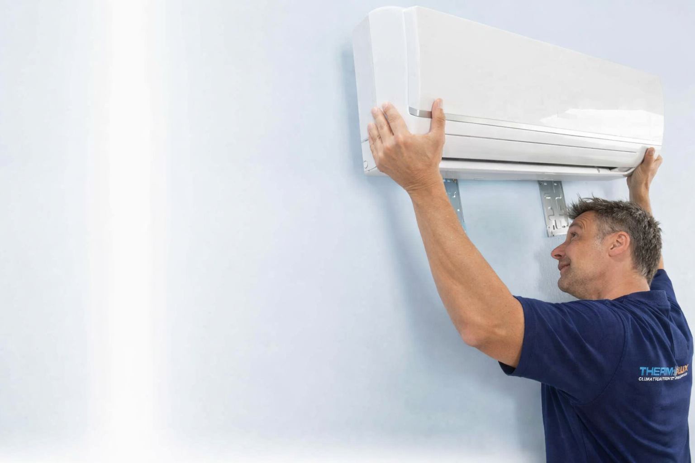
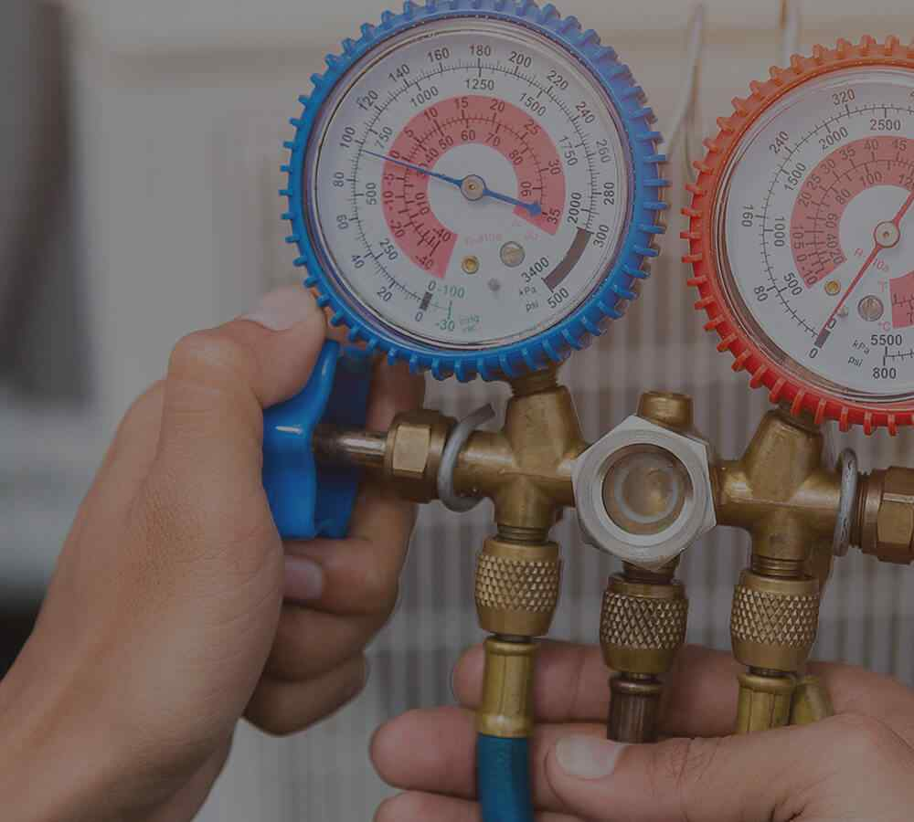

Climatisation et chauffage
Installation, réparation, entretien et diagnostic de systèmes muraux et centraux dans le Grand Montréal.
Services
Choisissez votre service

Installation
Systèmes muraux et centraux, de la soumission gratuite à la mise en service.

Réparation
Elle ne chauffe plus, ne climatise plus ou fait du bruit : nous réparons.

Entretien
Nettoyage et inspection pour préserver performance et durée de vie.

Diagnostic et dépannage
Identifier la cause d’un problème, avec réparation d’urgence disponible.
Notre méthode
Comment ça marche
De la soumission gratuite à la mise en service, cinq étapes simples.
- Soumission gratuite
- Évaluation de vos besoins
- Choix de l’appareil
- Installation
- Mise en service

Pourquoi Thermolux
Un travail propre, une équipe courtoise

Licence RBQ 5812-9388-01Entrepreneur certifié par la Régie du bâtiment du Québec
- Techniciens certifiés
- Installation et entretien par des professionnels licenciés.
- Garantie fabricant et main-d’œuvre
- Votre installation est protégée.
- Service fiable et professionnel
- Une équipe locale, de la soumission à l’entretien.
- Aide pour la subvention LogisVert
- Nous vous accompagnons dans les démarches.